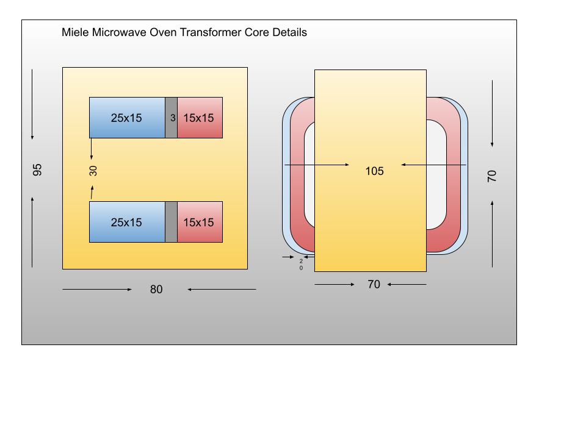

Mesaured some dimensions of the transformer along with winding wire size and
number of turns to see if I can estimate inductance
of primary and secondary and the mutual inductance from emperical relations
The above type of core is referred to as Shell Type. The
central beam of the E of EI core carries flux from both primary and secondary
windings. That is why it is larger than the outer limbs. There is a mention about
high leakage transformer would have air gap. But I did not find any. If anything
I found tigtly pakced 3mm laminations between primary and secondary windings.
The core part (The middle leg) is continuous.
| Turns | SWG | dia(mm) | ohms |
| Primary | 225 | 26 | 0.483 | 2.8 |
| Secondary | 1740 | 30 | 0.296 | 185 |
There is a three turn winding sandwitched between primary and secondary which
will provide necessary voltage for the magnetron heating element. One of te high
voltage winding terminal is grounded. The heating element winding differential
is quite small but the voltage level will be high as one of its terminal joins the
high voltage terminal of the secondary. (Please note that the high voltage end
of secondary is negative with reference to ground... the HV output is rectifiefd
with high voltage diode.)
Based on the above information we can
expect RMS current in secondary 900*0.8/1856 = 390mA
(Assuming 900W rating , and overall efficiency is 80%)

Here is the script that is evolving to enable Transformer
design verification calculations. This is still work in
progress at this stage.